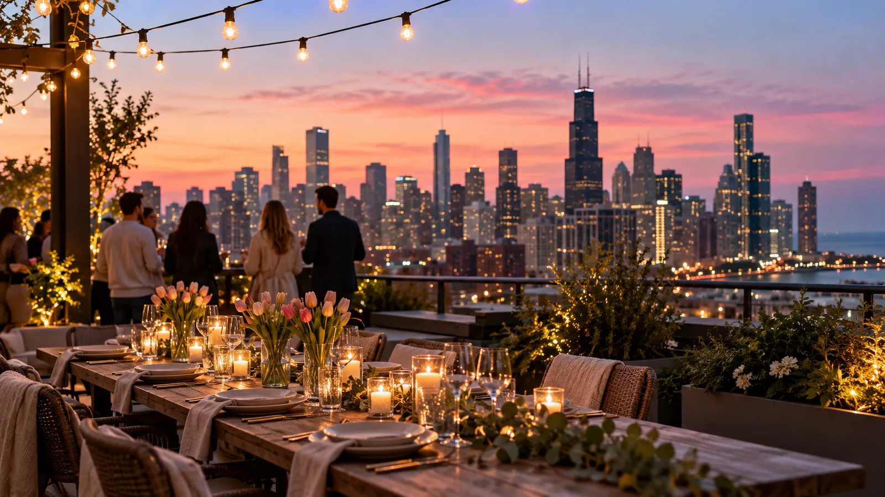
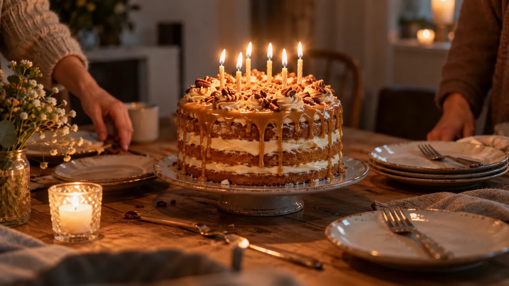
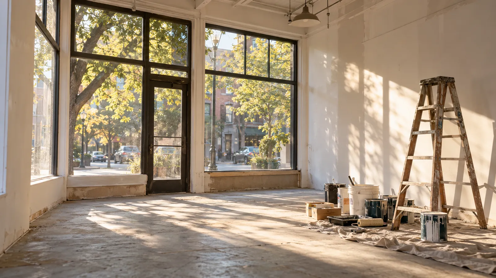
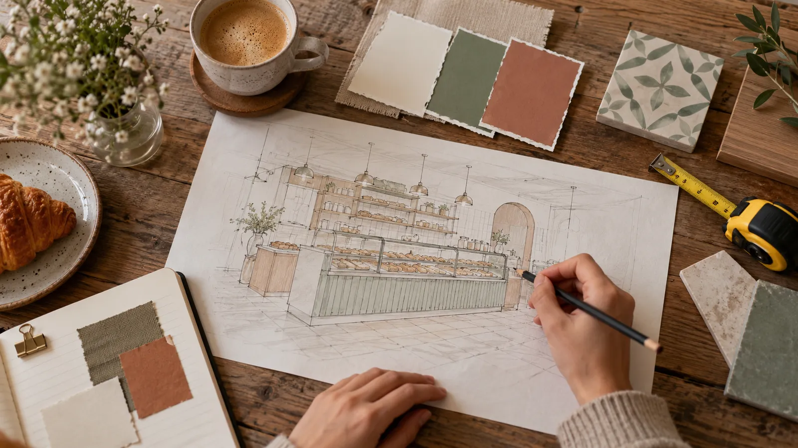
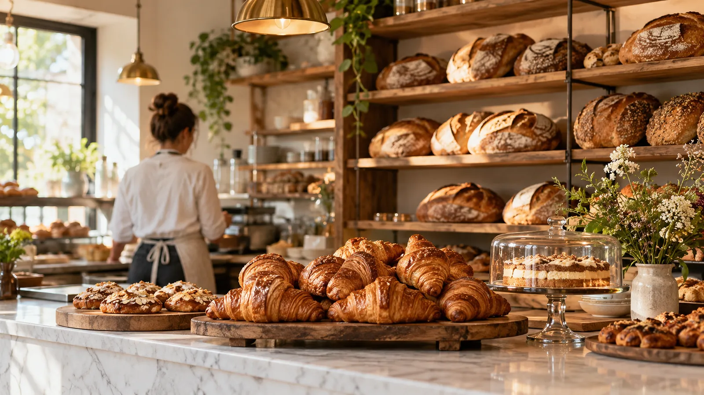

A quiet app
for loud notes
Write, collect and make things in Slimnote. When a note is ready, one button turns it into a live web page or a scroll story people love to read.
Five slow days up north
No plan, one small car, and a lake nobody warned us about. Five days, thirty-seven towns, one rule: never take the fast road.
Click a step to type in it, right in the note.
Dana turns 30
Rooftop, string lights, a cake that almost didn’t make it up the stairs.
Saturday, 7pm
rooftop!! bring
a sweater

the view, 8:12pm

made it! (barely)
Year one
Twelve months of four a.m. alarms, burnt crusts and a line out the door. Here’s what we’d tell ourselves on day one.
Nobody remembers the fourteenth kind of bread. Everybody remembers the one that was gone by ten.
Tap Shift right after a word to style it; tap again for a new look. The last word you pick is the hero.

Opening the bakery


Sunday soups
Four soups, one pot, a slow Sunday. Share this with anyone who asks for the recipe.
Roasted tomato
Sunday soups